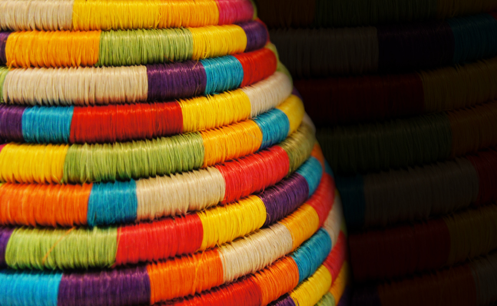

La elaboración de cestos y canastos en rollo de Guacamayas, una técnica artesanal tradicional del municipio colombiano de Guacamayas en Boyacá, implica un proceso meticuloso y lleno de tradición que se transmite de generación en generación. A continuación, se describe el proceso en detalle:
Seleccion y preparacion
Elección del fique: Se seleccionan hojas maduras de fique (Furcraea foetida), una planta fibrosa nativa de la región. Las hojas deben estar en buen estado, libres de plagas o daños.
Extracción de la fibra: Las hojas se raspan con un instrumento metálico llamado "sacador" para extraer las fibras largas y resistentes, conocidas como cabuya.
Hilado: Las fibras de cabuya se hilan a mano, enrollándolas sobre el muslo o utilizando un huso manual, para crear hebras uniformes y delgadas.
Corte de la cabuya: Las hebras de cabuya se cortan en tiras finas de aproximadamente 1 centímetro de ancho.
Enrollado: Las tiras de cabuya se enrollan cuidadosamente sobre sí mismas, formando rollos firmes y consistentes.
Clasificación de los rollos: Los rollos se clasifican según su tamaño y grosor para su uso posterior en el tejido.
Preparación de la base: Se crea una base circular o rectangular con los rollos de cabuya más gruesos, utilizando técnicas de tejido como el "enrejado" o el "chaquiro".
Levantamiento de paredes: Se van incorporando rollos de cabuya más delgados a la base, tejiéndolos en espiral y aumentando gradualmente la altura de la cesta o canasto.
Variaciones en el tejido: Se pueden incorporar patrones decorativos utilizando diferentes colores de cabuya, técnicas de tejido más complejas o incluso la adición de otros materiales como chaquira o semillas.
Acabado y detalles finales
Remate: Se rematan los bordes de la cesta o canasto con cuidado, ocultando las fibras sueltas y creando un borde prolijo.
Peluqueado: Se "peina" la superficie del tejido con un cepillo especial para eliminar las fibras sueltas y darle un aspecto más uniforme y pulido.
Barnizado o aplicación de cera: Opcionalmente, se puede aplicar una capa de barniz o cera natural para proteger la pieza y realzar su brillo.
Tradición transmitida: La elaboración de cestos y canastos en rollo de Guacamayas es una tradición que se ha transmitido de generación en generación, principalmente entre las mujeres de la comunidad.
Importancia cultural: Esta artesanía representa un elemento importante de la identidad cultural del municipio de Guacamayas y de la región boyacense en general.
Valor económico: La producción y venta de cestos y canastos en rollo de Guacamayas genera ingresos económicos para las familias artesanas, contribuyendo al desarrollo sostenible de la comunidad.
La elaboración de cestos y canastos en rollo de Guacamayas es un proceso artesanal meticuloso que combina técnicas tradicionales, habilidad manual y creatividad, dando como resultado piezas únicas y llenas de valor cultural y patrimonial.